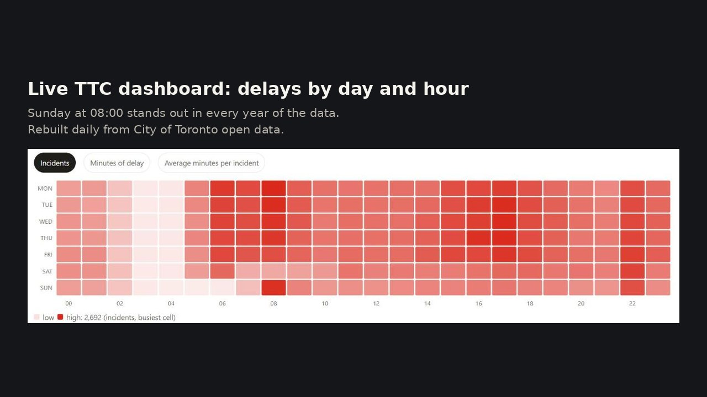

Amir Patel · Data Analyst and Data Engineer · SQL, Python, R
Available now · Toronto, open to work across CanadaI turn messy lending data into decisions people trust.
Data analyst and data engineer with nearly two years in Canadian consumer lending. I built the SQL and Python pipelines, the dashboards and the testing behind how a lender decides who qualifies, how portfolios perform and how models are judged. I also test everything, and I publish the proof. All of it sits in the database below, so ask it anything.
projects project_skills skills numbers experience contact. Try DESCRIBE projects or SELECT project, result FROM projects WHERE category LIKE '%Risk%'
Cash 4 You work is shown as generic designs, without internal details.
Try it yourself.

Every TTC subway delay the City has published since 2014, added up by time, place and cause. It rebuilds daily and works on your phone.
Pick the hour you think costs the most delay minutes, then check the map.
A skills list on its own proves nothing. The number beside a skill is how many projects in the database used it. Click one and the console pulls those projects. Skills without a number aren't tied to a project in this database.
The loop I follow on every project, in this order.
Pipelines get data quality checks and tests before anyone sees a dashboard. The TTC project runs 43 tests in CI and rebuilds every day.
Real repos, live dashboards and narrated walkthroughs, so you can check what I built instead of taking my word for it.
Requirements, BRDs and user stories first, then tools that finance, risk and marketing teams actually adopt.
The console has the same rows in the experience table.
I am based in Toronto and open to work across Canada, for any employer. The fastest way to reach me is email or LinkedIn.